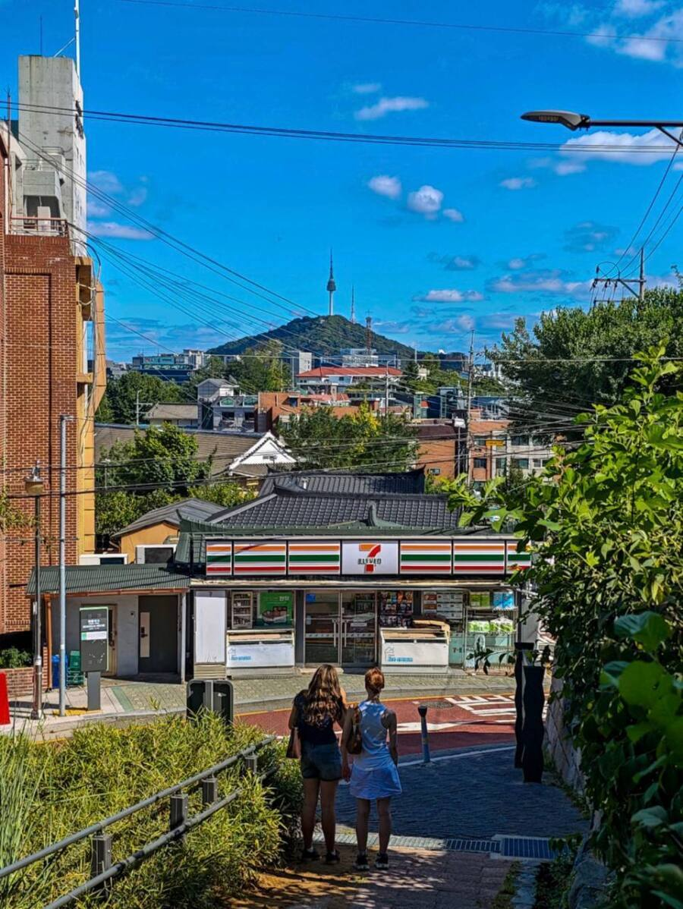

남산 세븐일레븐 종로사직점

남산 세븐일레븐 종로사직점
ㄹㅇ 보자마자 그 생각함 ㅋㅋㅋㅋ
이러다 후지산 로손급 될 수도
한국인들이 일본 갬성이라고 좋아하는 걸 일본인들이 이해 못하는 거 같은 건가?
왜 찍는지 이해가 안 간다
그건 아조씨가 공감능력이 떨어지는거
비행기 14시간 타면 이해할 수 있지 않을까?
외국인 입장에서는 뭘 봐도 이국적이니 좋겠다만, 한국인 입장에서 저기 가서 찍을 정도냐는 거지
약간 디스토피아 도시밖 시골? 교외? 이런느낌을 좋아하는거같은데
애초에 외국인 포토존이라는데 왜 한국인 입장에서 이해하려고 하는겨
난 보니까 이해가네
사람마다 편차가 있는법이지
하늘은 탁 트여있고 저 멀리 보이는 한국 대표 랜드마크 남산타워에 한국 전통 기와달린 세븐일레븐.이걸 한큐에 볼수 있는데 충분히 예쁘지
나도 한 번 가서 찍고 싶은데....
미국이나 유럽 건축양식 감성 생각하면
이 감성 이해가 가긴 함 ㅋㅋㅋㅋㅋㅋ
왜?
전혀 다른감성이라 그런듯
건물부터 전봇대까지 전부 유럽/미국이랑 달라서
랜드마크부터 한국스러운거 다 몰려있는 느낌이긴 하네 ㅋㅋㅋ
여긴 그래도 왜좋아하는지 알것 같네
뷰 좋은데?
케데헌에 나오는 그 곳이니까 찍을 가치가 있다고 봄
존나 이쁘긴 함
선정리좀
내가 봐도 이쁜데 외국인들은 엄청 좋아할거같은데 ㅋㅋㅋ
전기줄 매립좀 해줘라
내가볼땐 아무렇게나 치렁치렁댄 전기줄마저 저 힙한 뷰의 요소중하나임 내가볼때
ㅇㅇㅇㅇ 내가 봐도 이 생각임 ㅋㅋㅋㅋㅋㅋㅋㅋ 저 모든 풍경이 어우러진 느낌을 좋아하는거임
전기줄이 나름 선적인 요소로 디자인 포인트임ㅋㅋ
낭만있네
진짜 지중화좀 제대로 하자
타워랑 꽤 멀어보이는데 저기까지 남산인가
ㅈㄴ 한국스럽다 이쁘다
Convenience store (어쩔)
Convenience store, Japan (감성 호들갑)
이런 느낌인거
위치좋네
한국스럽긴하네 이쁘다
전깃줄이 한국느낌 넉넉함
점주 바나나우유 대량발주 드가자
간판이 이뻐서 찍는건가?
최근에 저기 근처갈 일 있어서 가봤는데 외국인들이 편의점 앞에 있길래 뭐지했는데 저런 이유였군
한국감성요소에 전선도 필수인가.....
런던한국거리재현물에도 전선은 있던데
여러군데 덧댄 꼬질꼬질한 이면도로랑
잘찾았네 ㅋㅋ
한양도성 돌다가 지나가본듯
유럽 두군데 살아봤는데 도시 뒤로 산이 보이는 풍경이 없어서 저게 유니크하긴 함 진짜
이쁘네 ㅋㅋㅋ
저기도 일본 후지산 편의점처럼 되는거 아닌갘ㅋㅋㅋ